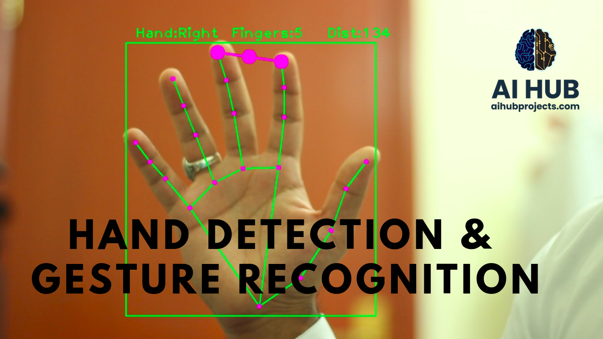

Projects
CI/CD Pipeline
CI/CD pipelines are a practice focused on improving software delivery throughout the software development life cycle via automation.
Skills used:
Linux, AWS, Jenkins and Docker.

Jarvis Assistant
An ultimate desktop assistant that makes your life easier by automating some mundane, daily tasks. It's an AI without any algorithm.
Skills used: Python.
Tool used: Visual Studio Code.

Blood Donor Management System
The Blood Bank Management System (BBMS) is an application that stores, processes, retrieves, and analyzes data about blood bank administration.
Skills used:HTML and CSS
Tool used: Visual Studio Code.

Hand Detection
provides the palm detection of hand gestures, where the end of the upper limb is considered to be the palm point based on the detection and recognition of human skeleton.
Skills used: Python.
Tool used: Visual Studio Code.
